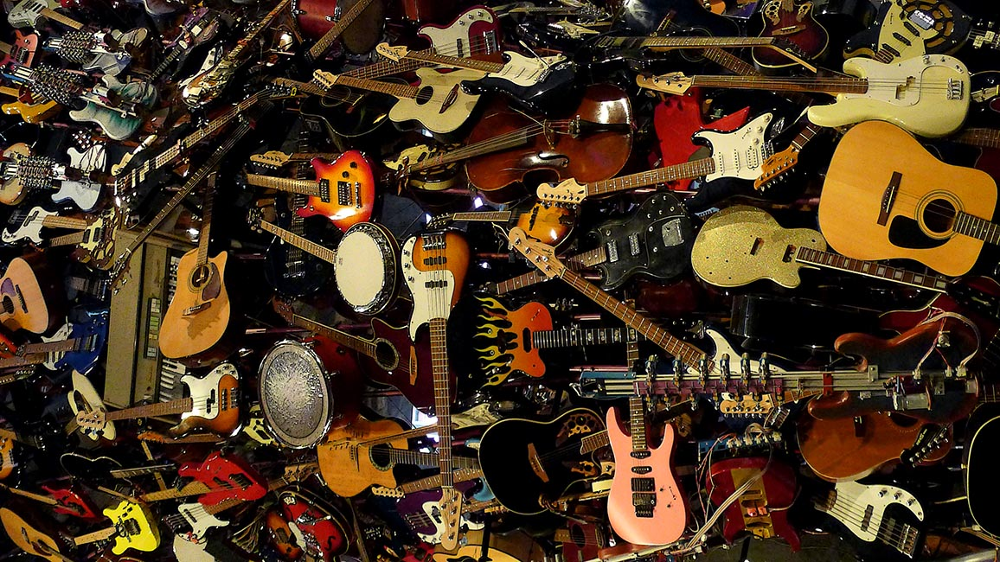

Любим гитары

О нас.
Создатель данного сайта Якубович Архип. Он родился в Москве в 2008 году. Сайт был сделан по домашей работе для школы 1505. Принимала данную работу Александра Адреевна(учитель информатики).| Якубович Архип | Ход разработки сайта | Даты |
| Якубович Архип родился в 2008 в городе Москва. Якубович играет на акустичесой гитаре, поэтому он выбрал такую тему. | Разработка сайта длилась один месяц. Это было очень интересно, но сложно. Работа шла быстро. | Начало работы началась с 4 апреля по 16 мая. Я уложился дэдлайн. И да, это было сделанно ради стёба;) |
.jpeg) |
 |
<